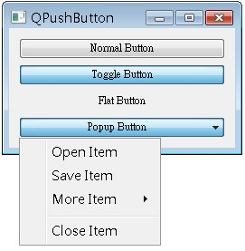
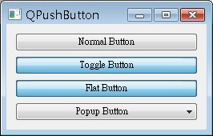

QPushButton繼承自QAbstractButton（再繼承自QWidget），主要提供視窗的按鈕外觀及行為，在 使用 Signal 與 Slot（使用按鈕關閉視窗） 已經看過QPushButton的基本運用，接下來的這個簡單範例，將示範幾個QPushButton的外觀設定：
#include <QApplication>
#include <QWidget>
#include <QPushButton>
#include <QMenu>
#include <QVBoxLayout>
int main(int argc, char *argv[]) {
QApplication app(argc, argv);
QWidget *window = new QWidget;
window->setWindowTitle("QPushButton");
window->resize(250, 50);
QPushButton *btn1 = new QPushButton("Normal Button");
QPushButton *btn2 = new QPushButton("Toggle Button");
btn2->setCheckable(TRUE);
btn2->setChecked(TRUE);
QPushButton *btn3 = new QPushButton("Flat Button");
btn3->setFlat(TRUE);
QPushButton *btn4 = new QPushButton( "Popup Button");
QMenu *menu = new QMenu;
menu->addAction("Open Item");
menu->addAction("Save Item");
menu->addMenu("More Item");
menu->addSeparator();
menu->addAction("Close Item");
btn4->setMenu(menu);
QVBoxLayout *layout = new QVBoxLayout;
layout->addWidget(btn1);
layout->addWidget(btn2);
layout->addWidget(btn3);
layout->addWidget(btn4);
layout->addStretch(1);
window->setLayout(layout);
window->show();
return app.exec();
}
btn1為最基本的QPushButton建構，btn2使用setCheckable()方法設定按鈕為可停駐的Toggle
Button，並使用setChecked()設定其預設為停駐狀態，btn3使用setFlat()設定按鈕為沒有浮起框線的平坦按鈕，只有在按下時才
會顯示QPushButton被按下的外觀。
QPushButton可以設定按下時出現下拉選單，設定選單時使用的是QMenu，每個選單下的選項為QAction的實例，使用QMenu的
addAction()將QAction的實例加入可以成為一個選項，若要加入子選單，則使用addMenu()加入，addAction()與
addMenu()都可以直接指定字串，將自動產生QAction與QMenu。addSeparator()則在選單中加入分隔線。
要設定QPushButton按下後出現選單，則使用其setMenu()方法。程式中使用QVBoxLayout的addStretch()加入了拉伸
係數（stretch
factor），每個QWidget在使用addWidget()加入版面配置時，也可以指定一個拉伸係數，不指定的話拉伸係數預設為0，拉伸係數是當您
在拉伸版面時，每個元件消耗多餘空間的相對比例，在這個範例中，由於QWidget加入時拉伸係數預設為0，所以最後使用addStretch(1)時表
示剩餘的空間將全部作為空白的空間。
下圖為程式示範畫面之一，Toggle Button為停駐狀態，Flat Button沒有按下時是平坦狀態，而按下第四個按鈕出現了選單。

下圖為按下Flat Button時的畫面示範：

|
|